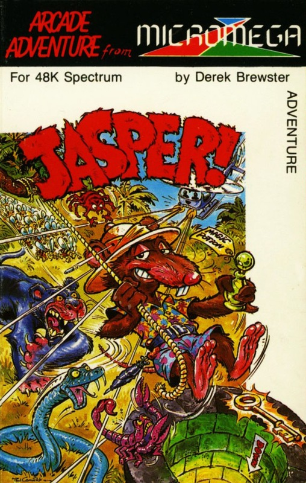
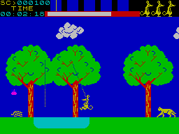
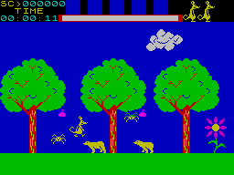

Jasper


{kind=link}

| Publisher: | Micromega |
| Price: | £6.95 |
| Year: | 1984 |
| Source: | CRASH, Issue 10 |

Micromega have two games in this issue, and both are by the same author. Kentilla is a text/graphics adventure in the classic vein, but with Jasper Derek Brewster has changed tack completely (although it could well be called an arcade/adventure game) and taken himself and Micromega far away from the universe of 3D. Jasper is an all swinging, all singing, all dancing jump, hop and collect game in the tradition of Jet Set Willy. However collecting here isn’t a question of collecting for points but because the various objects have a strictly defined purpose and use, which is what adds the adventure element.

big cats
Jasper is a mouse and the basic object of the game is to guide him from the start screen to the finishing screen without getting finished off en route. There are 22 screens to negotiate, all linked in the sense that you can move from one to the next and back again (or in one case down and up again). This is rather important because Jasper can only carry five objects at a time which means often having to drop something and then return for it. Consequently the 22 screens become more in terms of completing the game. The items collected (by standing on them and pressing the collect key) appear in small boxes at the top of the playing area and they may be used by pressing the appropriate numerical key. Each object does have a specific use — ropes are pretty obvious, but umbrellas? Well think carefully — this is a cartoon comic strip — press the button when forced to leap off a high place and bingo — the brolly opens to lower Jasper to the ground safely. Once used an object vanishes.
Up against Jasper are a series of problems which include traditional platform strategical thinking, various animated animals like big cats, bunnies, wasps, spiders, snakes and scorpions, flowers which may be helpful or lethal and natives that throw coconuts and spears. Each screen has its own identity and share of the horrors. Fortunately Jasper has a mighty leap and can walk on two feet or duck down to all fours. Indeed, Jasper is a Mighty Mouse.
CRITICISM

you’re sure of a big surprise
‘What first struck me with this game is the sharpness and clarity of the numerous graphics, also their realism. A lot of hard work must have gone into creating the graphics. So much moves with this game, and everything that moves is so well animated. Many skills are required with Jasper, timing being one of the major ones, but this is also definitely a true arcade adventure (many others have claimed to be) because you need to find the objects to help you move onto the next screen; these objects are practical in the sense that you can and must use them, they’re not just there for points. No detail whatever has been spared on this game on either the graphical or content side. Jasper is just such a pleasing game to play seems to me to be perfect, and will need to be played a great deal to overcome the difficulty factor built in. It is, in my opinion, a distinct advance on the Jet Set Willy type of game. Worth every penny and I really recommend it.’
‘Jasper has the makings of a hit game — tremendous graphics, well calculated problems to overcome and a marvellous hero in Jasper himself. There are quite a few keys used to control the game, so familiarity with the layout is important, since some decisions have to be made in a great hurry. Fortunately one key can do several things like Y to P will make Jasper climb up a rope, release it if he’s swinging or just simply jump if he’s on the ground or a platform. This is not an easy game, each screen is likely to kill you off at a moment’s notice, but should you get through it safely there is a real time clock displayed, and the long term objectives are obviously to improve not only the score but also the time taken overall. On the subject of timing, there is also a time limit in which to get off a screen, which makes things even meaner. Very much a game of timing skill, Jasper is marvellous, and infuriatingly addictive.’
‘This is a sort of Jungle Trouble-plus game — very plus, because the graphics are excellent. There are so many different creatures, all of them beautifully animated and detailed, and all of them lethal! It has been constructed so that things seem impossible, when they aren’t — good timing and a good memory are essential. But the adventure elements such as collecting useful objects and then finding out what to do with them (some have obvious uses, others less so) adds immensely to the playability of Jasper. Your mouse is also very versatile — pity the fingers aren’t always as good! Micromega have fooled everybody with this game because it isn’t 3D at all and it just goes to show that a well thought out idea, well implemented doesn’t need 3D to make it addictive or fun to play. Jasper will take a long time to get through. Great game.’
COMMENTS
| Control keys: | A/S left/right, Y to P up (rope), jump and release rope (when swinging), H to ENTER down (rope), and duck, B to SPACE = get an object, 1 to 5 = use carried object by box number, Q to T plus 1 to 5 = drop carried object. |
| Joystick: | None — too many keys |
| Keyboard play: | Highly responsive, with two directional keys next to each other, leaves other hand free for key selection, but a programmable joystick might be an advantage here |
| Use of colour: | Excellent, very varied and bright |
| Graphics: | Excellent, marvellous animation and detail, fast and smooth and without any flicker |
| Sound: | Continuous tune and spot effects |
| Skill levels: | 1 |
| Lives: | 3 |
| Screens: | 22 |
| General rating: | Addictive, highly playable and highly recommended. |
| Use of computer: | 86% |
| Graphics: | 96% |
| Playability: | 91% |
| Getting started: | 90% |
| Addictive qualities: | 94% |
| Value for money: | 89% |
| Overall: | 91% |